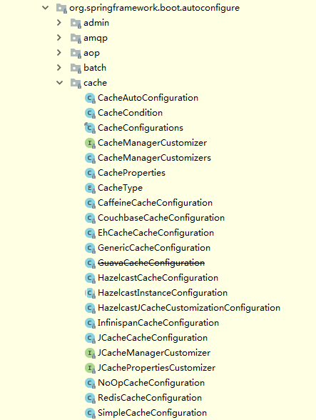

springboot集成spring cache¶
本文介绍如何在springboot中使用默认的spring cache，
声明式缓存¶
Spring 定义 CacheManager 和 Cache 接口用来统一不同的缓存技术。例如 JCache、 EhCache、 Hazelcast、 Guava、 Redis 等。在使用 Spring 集成 Cache 的时候，我们需要注册实现的 CacheManager 的 Bean
Spring Boot 为我们自动配置了 JcacheCacheConfiguration、 EhCacheCacheConfiguration、HazelcastCacheConfiguration、GuavaCacheConfiguration、RedisCacheConfiguration、SimpleCacheConfiguration 等。
默认使用 ConcurrenMapCacheManager
在我们不使用其他第三方缓存依赖的时候，springboot自动采用ConcurrenMapCacheManager作为缓存管理器。 环境依赖
在pom文件引入spring-boot-starter-cache环境依赖：
<dependency>
<groupId>org.springframework.boot</groupId>
<artifactId>spring-boot-starter-cache</artifactId>
</dependency>
创建一个book数据访问层
先创建一个实体类
package hello;
public class Book {
private String isbn;
private String title;
public Book(String isbn, String title) {
this.isbn = isbn;
this.title = title;
}
public String getIsbn() {
return isbn;
}
public void setIsbn(String isbn) {
this.isbn = isbn;
}
public String getTitle() {
return title;
}
public void setTitle(String title) {
this.title = title;
}
@Override
public String toString() {
return "Book{" + "isbn='" + isbn + '\'' + ", title='" + title + '\'' + '}';
}
}
创建一个数据访问接口
public interface BookRepository {
Book getByIsbn(String isbn);
}
这个你可以写一个很复杂的数据查询操作，比如操作mysql、nosql等等。为了演示这个栗子，我只做了一下线程的延迟操作，当作是查询数据库的时间。
实现接口类：
package hello;
import org.springframework.stereotype.Component;
@Component
public class SimpleBookRepository implements BookRepository {
@Override
public Book getByIsbn(String isbn) {
simulateSlowService();
return new Book(isbn, "Some book");
}
// Don't do this at home
private void simulateSlowService() {
try {
long time = 3000L;
Thread.sleep(time);
} catch (InterruptedException e) {
throw new IllegalStateException(e);
}
}
}
测试类
package hello;
import org.slf4j.Logger;
import org.slf4j.LoggerFactory;
import org.springframework.boot.CommandLineRunner;
import org.springframework.stereotype.Component;
@Component
public class AppRunner implements CommandLineRunner {
private static final Logger logger = LoggerFactory.getLogger(AppRunner.class);
private final BookRepository bookRepository;
public AppRunner(BookRepository bookRepository) {
this.bookRepository = bookRepository;
}
@Override
public void run(String... args) throws Exception {
logger.info(".... Fetching books");
logger.info("isbn-1234 -->" + bookRepository.getByIsbn("isbn-1234"));
logger.info("isbn-4567 -->" + bookRepository.getByIsbn("isbn-4567"));
logger.info("isbn-1234 -->" + bookRepository.getByIsbn("isbn-1234"));
logger.info("isbn-4567 -->" + bookRepository.getByIsbn("isbn-4567"));
logger.info("isbn-1234 -->" + bookRepository.getByIsbn("isbn-1234"));
logger.info("isbn-1234 -->" + bookRepository.getByIsbn("isbn-1234"));
}
}
主类
package hello;
import org.springframework.boot.SpringApplication;
import org.springframework.boot.autoconfigure.SpringBootApplication;
@SpringBootApplication
public class Application {
public static void main(String[] args) {
SpringApplication.run(Application.class, args);
}
}
启动程序，你会发现程序在控制台依次打印了：
2014-06-05 12:15:35.783 … : …. Fetching books
2014-06-05 12:15:40.783 … : isbn-1234 –> >Book{isbn=’isbn-1234’, title=’Some book’}
2014-06-05 12:15:43.784 … : isbn-1234 –>Book{isbn=’isbn-1234’, title=’Some book’}
2014-06-05 12:15:46.786 … : isbn-1234 –>Book{isbn=’isbn-1234’, title=’Some book’}
你会发现程序依次3s打印一行日志。这时还没开启缓存技术。
开启缓存技术
在程序的入口中加入@ EnableCaching开启缓存技术：
@SpringBootApplication
@EnableCaching
public class DemoApplication {
public static void main(String[] args) {
SpringApplication.run(DemoApplication.class, args);
}
}
在需要缓存的地方加入@Cacheable注解，比如在getByIsbn（）方法上加入@Cacheable(“books”)，这个方法就开启了缓存策略，当缓存有这个数据的时候，会直接返回数据，不会等待去查询数据库。
@Component
public class SimpleBookRepository implements BookRepository {
@Override
@Cacheable("books")
public Book getByIsbn(String isbn) {
simulateSlowService();
return new Book(isbn, "Some book");
}
// Don't do this at home
private void simulateSlowService() {
try {
long time = 3000L;
Thread.sleep(time);
} catch (InterruptedException e) {
throw new IllegalStateException(e);
}
}
}
这时再启动程序，你会发现程序打印：
isbn-1234 –>Book{isbn=’isbn-1234’, title=’Some book’}
2017-04-23 18:17:09.479 INFO 8054 — [ main] forezp.AppRunner : isbn-4567 –>Book{isbn=’isbn-4567’, title=’Some book’}
2017-04-23 18:17:09.480 INFO 8054 — [ main] forezp.AppRunner : isbn-1234 –>Book{isbn=’isbn-1234’, title=’Some book’}
2017-04-23 18:17:09.480 INFO 8054 — [ main] forezp.AppRunner : isbn-4567 –>Book{isbn=’isbn-4567’, title=’Some book’}
2017-04-23 18:17:09.481 INFO 8054 — [ main] forezp.AppRunner : isbn-1234 –>Book{isbn=’isbn-1234’, title=’Some book’}
2017-04-23 18:17:09.481 INFO 8054 — [ main] forezp.AppRunner : isbn-1234 –>Book{isbn=’isbn-1234’, title=’Some book’}
只有打印前面2个数据，程序等了3s，之后的数据瞬间打印在控制台上了，这说明缓存起了作用。
@Cacheable 在方法执行前 Spring 先查看缓存中是否有数据，如果有数据，则直接返回缓存数据；若没有数据，调用方法并将方法返回值放进缓存。有两个重要的值， value，返回的内容将存储在 value 定义的缓存的名字对象中。key，如果不指定将使用默认的 KeyGenerator 生成。
@CachePut 与 @Cacheable 类似，但是它无论什么情况，都会将方法的返回值放到缓存中, 主要用于数据新增和修改方法。
@CachePut(value = "concurrenmapcache")
public long save() {
long timestamp = new Timestamp(System.currentTimeMillis()).getTime();
System.out.println("进行缓存：" + timestamp);
return timestamp;
}
@CacheEvict 将一条或多条数据从缓存中删除, 主要用于删除方法，用来从缓存中移除相应数据。
@CacheEvict(value = "concurrenmapcache")
public void delete() {
System.out.println("删除缓存");
}